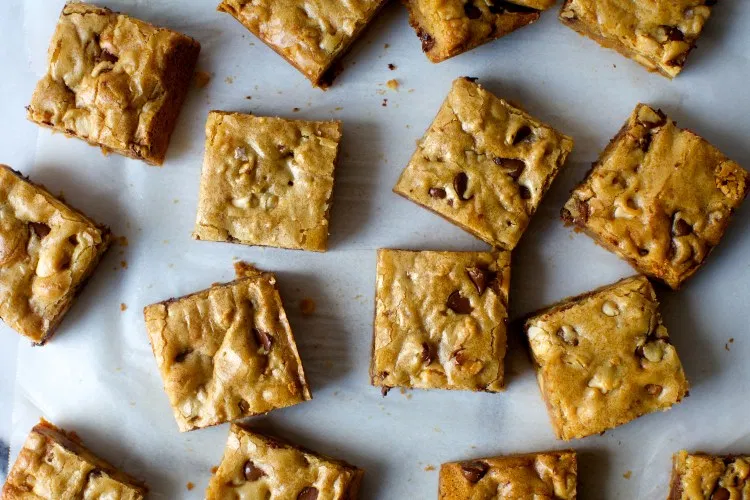

Return Home

This simple blondie recipe only takes 40 minutes to prepare and can easily be modified
with any add-ins of your choice, chopped dark chocolate and caramel pair particularly
well with it.
- 8x8 inch baking pan
- parchment paper
- cake tester
- 115g unsalted butter
- 190g light or dark brown sugar
- 1 large egg
- 1 tsp vanilla extract
- 1/2 tsp flaky sea salt or 1/4 tsp coarse sea salt
- 130g all-purpose flour
- 1 1/2 cups mix-ins of your choice (optional)
- Heat oven to 180℃ and line your pan with parchment paper, buttering the exposed sides.
- Melt the butter in the microwave or on the hob, whisk in sugar
- Once lukewarm whisk in the egg, vanilla, and sea salt
- Fold in the flour and any mix-ins of your choice
- Scrape into prepared pan and bake for 20-25 minutes or until lightly browned at the edges
- Let blondies cool in the pan for about 10 minutes before removing with the parchment paper and serving